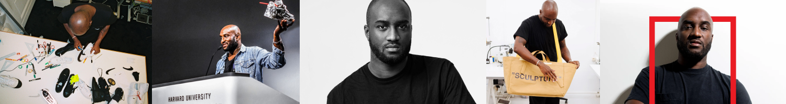

Who was he?
He was an American fashion designer and entrepreneuer. He was a creative director at Louis Vuitton and was the founder of Off-White. Abloh was named by Time magazine as one of the 100 most influential people in the world in 2018.He founded the “Post-Modern” Scholarship Fund which was created with the mission of fostering inclusion in the fashion industry by creating opportunities for Black students.
Design Style
Virgil connected the world of streetwear and the luxury of high-fashion. He was globally famous as a designer and an influential figure in streetwear fashion.
Awards
- Urban Luxe Award, 2017 British Fashion Awards.
- International Designer of the Year, GQ men of the year awards 2017
- Abloh's Off-White Air Jordan "the Ten" collaboration, Shoe of the Year, 31st Footwear News Achievement Awards 2017
- Time magazine's 100 most influential people in the world, 2018